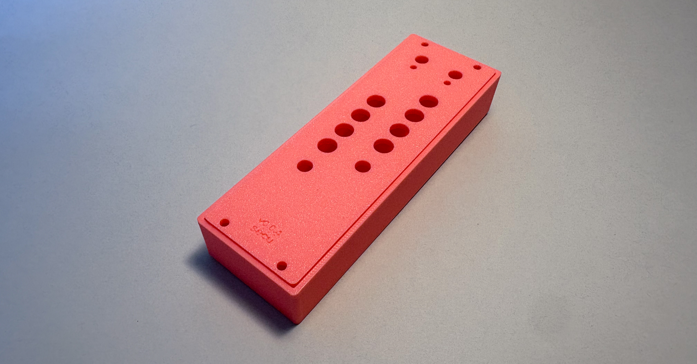
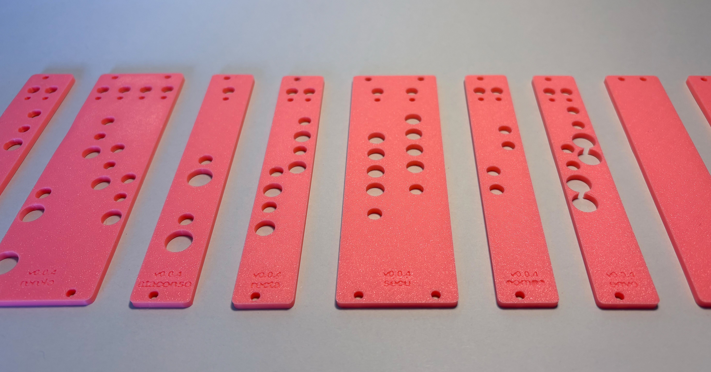

← Volver a proyectos
Cajas y paneles Popusíntesis
Diseño paramétrico · 2026Este proyecto trabaja con módulos de formato Eurorack, diseñados mediante código y diseño paramétrico en OpenSCAD. Estos módulos son parte de mi desarrollo durante la práctica en la microempresa Piruetas, para un proyecto de tesis doctoral que busca popularizar la síntesis.

